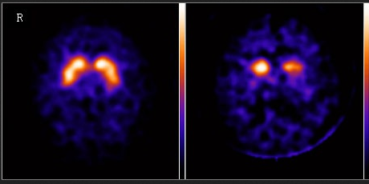

4. Neurologische Störungen
In den vorherigen Kapiteln haben die Studenten alles nötige zum Aufbau der Nervenzellen, die Weiterleitung und Potentialentstehung kennengelernt. In diesem wird nun auf die Anomalitäten im zentralen Nervensystem eingegangen, damit sind Störungen und Fehlfunktionen jeglicher Art im Nervensystem gemeint.
Sind Störungen im zentralen Nervensystem überhaupt schlecht?
Störungen in Gehirn- und Rückenmarksnervenzellen (also dem zentralen Nervensystem) können zu einem Kontrollverlust von der Motorik, zu einer verschlechterten Kontrolle des Zusammenspiels aller Systeme (Organsystem, Hormonregulierung, Kreislauf und Stoffwechsel), einer gestörten Verarbeitung von inneren und äußeren (Umwelt-)Signalen und zu einer Verschlechterung der kognitiven Funktionen führen. Anders gesagt das zentrale Nervensystem ist überlebensnotwendig und arbeitet in einer sehr hohen Präzision. Wenn diese Strukturen gestört werden durch Schädigungen der Hirn-oder Nervenzellen, sowie durch Störungen in der Weiterleitung von elektrischen und biochemischen Signalen von Nervenzelle zu Nervenzelle, kommt es zu neurologischen oder sogar zu psychischen Erkrankungen und kompletten Ausfällen im Körper. Welche neurologische Fehlfunktion auftritt, hängt hierbei vom Ort und der Art der Schädigung ab, wodurch jede neurologische Störung eine gewisse Individualität erhält und auch dadurch diagnostiziert werden kann.
Die Frage nach dem „Warum?“
Die Frage nach dem „Warum“ treten dann neurologische Störungen im Körper überhaupt auf, ist bis heute weit umstritten und meistens nicht wirklich aufgeklärt, wodurch die meisten Nervenerkrankungen auch wenig erforscht sind. Ansätze für die Ursachen von der Entstehung neurologischer Erkrankungen und Schädigungen reichen, bei den besser untersuchten Krankheiten, von äußere Einflüsse, besonders die Infektionen durch Viren und Bakterien über Umweltfaktoren wie Schadstoff- und Mikroplastikbelastung etc. betrachtet, bis hin zu genetischen Faktoren. Die am meisten registrierten und erforschten Schädigungen an diesen Strukturen kommen durch Durchblutungsstörungen vor. Hierdurch sterben bei zu geringer Durchblutung die Gehirn- und Nervenzellen ab. Denn die Zellen im Gehirn benötigen für ihre hohe Präzision nahezu 30% der Blutversorgung durch das Herz, wodurch sie ihre ausreichende Sauerstoff- und Nährstoffversorgung erhalten. Ähnlich sieht es aus, wenn die zur Blutversorgung nötigen Blutgefäße eine krankhafte Veränderung erleiden, sei es durch Verengung oder durch Platzen, denn dies führt zu Raumveränderungen und somit auch zum Schaden der Gehirn- und Nervensystemstrukturen. Weitere bekannte Schädigungen des zentralen Nervensystems treten durch Unfälle und andere mechanische Verletzungen auf, wodurch es zu (starken) Veränderungen im Nerven- oder Gehirnstruktur gibt. Anhand der bisherigen Ausführungen erkennt man, dass bei diesem Thema nicht fahrlässig von einer einzigen Störung im Nervensystem geredet werden kann. Denn in der Realität äußern sich neurologische Störungen in einer unglaublichen Vielfalt und prägen die unterschiedlichsten Symptome und Verläufe aus. In der untenliegenden Abbildung 1 erkennt man, wie die Formen der Störungen in Erkrankungen, Entzündungen, Raumforderungen und Infektionen des zentralen Nervensystems untergliedert werden.
Womit auch verdeutlicht wird, dass es sich hierbei um ein sehr komplexes Thema handelt, dass längere Zeit in Anspruch nehmen könnte, wenn man sich mit allen Gebieten befassen möchte. Um diesen Zeitraum zu verkürzen, wird im nachfolgenden Text nur auf wenige Erkrankungen im zentralen Nervensystem eingegangen, wobei auf die Krankheiten der Multiplen Sklerose und des Morbus Parkinson eingegangen wird.
1. Erkrankung ist nicht gleich Erkrankung des zentralen Nervensystems:
Anhand der Abbildung 1 erkennt man, dass sich die Erkrankungen des Nervensystems ebenfalls unterteilen lassen in degenerative Erkrankungen, fortschreitende genetische Erkrankungen, Nervenzelluntergänge, fortschreitende Störungen der Myelinisierung und Stoffwechselerkrankungen (hier besonders auf einen fehlerhaften Nervenzellstoffwechsel bezogen)
1.1 Störungen der Myelinisierung:
Die Nervenzellen haben an ihren Axonen sogenannte Myelinscheiden, die sich im Laufe ihrer Entwicklung durch Membranen von Gliazellen entwickelt haben und als eine Art Isolierung der Reizweiterleitung von Nervenzelle zu Nervenzelle dienen. Durch diese beschleunigt sich die Signalweiterleitung um ein Vielfaches. Wenn nun eine Störung der Myelinisierung auf Grund von Krankheiten eintritt, kommt es zu einer Unterbrechung bzw. zu starken Defiziten der Nervenleitung, wodurch Signale von Nerv zu Nerv deutlich verschlechtert bis gar nicht weitergeleitet werden können.
1.2 Arten des Myelins:
Myelin ist jedoch nicht gleich Myelin, denn man muss zwischen dem Myelin, das durch die Oligodendroglia im zentralen Nervensystem gebildet wird und dem Myelin, das in der Peripherie von Schwann-Zellen gebildet wird, unterscheiden. Dieses unterscheidet sich sowohl chemisch als auch immunologisch voneinander. Somit erklärt sich, warum einige Krankheiten die periphere Nerven (sensorische und motorische Nervenzellen) und andere Krankheiten das zentrale Nervensystem mit ihrer Myelinisierung angreifen.
1.3 Demyelinisierung:
Sie ist häufig eine Sekundärfolge von einer infektiösen, metabolischen oder hereditären Störung oder durch ein Toxin, wie zum Beispiel durch Alkohol. Bei primär demyelinisierenden Erkrankungen ist die Ursache eher unbekannt, wird jedoch häufig auf einen autoimmunen Mechanismus zurückgeführt, der durch eine vorhergehende Erkrankung wie eine Virusinfektion folgen kann. Die Demyelinisierung tendiert oft zu einer segmentalen, flickenförmigen Verteilung, wobei sie verschiedene Gebiete des zentralen Nervensystems gleichzeitig betreffen kann. Bei Erwachsenen können Schlaganfall, Entzündungen, Infektionen, Immun- und Stoffwechselstörungen sowie Ernährungsdefizite (z. B. Vitamin B12-Mangel) die Myelinscheide zerstören.
1.4 Multiple Sklerose (MS):
Bei dieser Erkrankung des zentralen Nervensystems liegt eine solche Demyelinisierung der Nerven des Gehirns und Rückenmarks vor. Sie zählt zu einer chronisch entzündlichen Autoimmun-Erkrankung, d. h. dass das eigene Immunsystem die Myelinscheiden der Nervenfasern und die Nervenzellen angreift und zerstört. Der Auslöser dieser heftigen Immunreaktion ist bislang noch ungeklärt und stellt immer noch vor ein Rätsel, denn etwas muss die Immunzellen dazu bewegen die eigenen Zellstrukturen als fremd zu erkennen. Durch die hergestellten Antikörper, die die Strukturen angreifen, kommt es zu einer stark verminderten Weiterleitung der Signale von Nervenzelle zu Nervenzelle, wodurch Lähmungserscheinungen auftreten, da die Muskeln nicht richtig koordiniert werden können.
Symptome:
* Spastische (krampfartige) Lähmungen und Koordinationsstörungen
* Gefühlsstörungen mit fleckenartigen Auftritt (z.B. Taubheitsgefühl, Ameisenkribbeln)
* Sehstörungen (Sehausfall oder Trübung, Doppelbilder)
* Rasche Ermüdbarkeit
* Konzentrationsstörungen
* Gehstörungen
* Sprechstörungen
* Depressionen
* Blasenschwäche
1.4.1 Diagnostik:
Der Arzt macht eine ausführliche neurologische Untersuchungsreihe, um andere Erkrankungen wie HIV-Infektion etc. auszuschließen. Ebenfalls macht dieser eine Gehirn- und Rückenmarksflüssigkeit Analyse, eine Kernspintomographie (MRT) und elektrophysiologische Messungen (Bestimmung der Leitfähigkeit der Nervenzellen, evozierte Potentiale) um die Diagnostik abzurunden, denn erst durch die ganzen Ergebnisse zusammen kann eine MS Diagnose gestellt werden.
1.4.2 Evozierte Potentiale:
Bei dieser Analysemethode werden einzelne Sinnesorgane gereizt. Die Nervenbahnen leiten die Reize als elektrische Impulse weiter und die Messung nimmt die Zeit auf, die diese evozierte Potentiale benötigen um vom Sinnesorgan in das entsprechende Gehirnareal zu gelangen und dass das Gehirn auf den Reiz reagiert. Eine verlangsamte Leitungsgeschwindigkeit der Nervenbahnen bedingt durch Entzündungen, kann auf die Erkrankung der Multiplen Sklerose hinweisen.
1.4.3 MRT:
Diese Methode ist ein bildgebendes Diagnoseverfahren, hierbei wird ein künstliches Magnetfeld erzeugt, wodurch eine Art Schnittbilder des Körpers / gewisser Bereiche angefertigt werden kann. Veränderungen im Gehirn wie Knoten, Entzündungen und Narbengewebe können genau detektiert werden, wodurch auch aktive Schubherde der Multiplen Sklerose Erkrankungen erkannt werden können. Um diese Herde zu erkennen wird dem Patienten ein Kontrastmittel verabreicht, denn diese Entzündungsherde nehmen dieses vermehrt auf und machen die Erkennung möglich. Mittels der McDonald-Kriterien (siehe Bild links)kann entschieden werden ob es sich hier um ein MS- Fall handelt. Eine MS liegt z. B. vor, wenn mindestens zwei Schübe und zwei Herde im ZNS nachgewiesen sind.
1.4.4 Nervenwasseruntersuchung:
Hiermit kann man entzündliche Veränderungen im Bereich des zentralen Nervensystems feststellen. Für diese Analyse wird das Nervenwasser mittels Hohlnadel aus dem Zwischenraum von Lendenwirbelkörpern entnommen, durch eine erhöhte Zahl an bestimmten Zellen und das Auftreten bestimmter Immunglobulinen wird auf eine Entzündungsreaktion zurückgeschlossen.
1.4.5 Verlauf von MS:
Die ersten Multiple Sklerose Symptome treten meistens in jungen Jahren, also zwischen 20 und 40 Jahren auf. Diese Krankheit äußert sich in verschiedenen Verlaufsformen, die unterteilt sind in schubförmige remittierende Verlaufsform, sekundäre progrediente Verlaufsform und primäre progrediente Verlaufsform.
Schubförmig remittierende Form:
Diese Form tritt in Schüben auf und entwickelt während eines Schubs Symptome der Krankheit, die nach Abklingen des Schubs sich in der Regenerationsphase nahezu zurückbilden. Welche Symptome sich zurückbilden ist jedoch nicht klar und kann auch nicht vorhergesagt werden.
Sekundär progrediente Form:
Diese Form verläuft auch in Schüben, jedoch verschlechtert sich der Gesundheitszustand des Patienten auch in den Regenerationsphasen, also zwischen der Zeit von zwei Schüben.
Primär progrediente Form:
Diese Form äußert sich in keinen erkennbaren Schüben, jedoch verschlechtert sich der Gesundheitszustand des Patienten immer weiter.
Behandlung:
Eine vollständige Behandlung dieser Erkrankung ist bislang nicht vorhanden, da diese zu den Krankheiten zählt, bei der der Auslöser bzw. die Ursachen nicht bekannt sind. Somit bleibt hier nur die Minderung der Krankheits-Symptome übrig, wodurch die Patienten einigermaßen beschwerdefrei leben können. Bei der Symptom-Behandlung wird auf vier große Ziele abgezielt, diese wären Hemmung der akuten Entzündungsreaktion, Verlängerung der schubarmen/schubfreien Zeit, Linderung der Symptome und Vermeidung möglicher Komplikationen.
Bei der Schubtherapie werden Medikamente wie Kortison Steroide, Immunsuppressiva (z.B. Azathioprin), Interferone, Immunglobuline etc. gegeben oder die Plasmapharese (Blutwäsche) wird gemacht.
Cortison hat hierbei die Funktion entzündungshemmend zu wirken und somit die Entzündungsreaktion an den Myelinscheiden, die durch die Antikörper des Immunsystems hervorgerufen werden, zu mindern und den Abbau der „Isolierung“ der Nerven zum geringen Teil zu verlangsamen.Immunsuppressiva unterdrücken die Immunantwort, wodurch die Schübe gemildert werden. Die Immunglobuline verringern ebenfalls die Schubrate und können zum Teil auch eine Remyelinisierung fördern. In den Schubphasen wird Kortison sogar in Infusionen verabreicht um eine besseren Effekt zu bekommen.
Blutwäsche:
Bei der Blutwäsche wird Blut aus dem Körper entnommen, über einen Filter gereinigt und wieder in den Körper zurücküberführt. Bei dieser Reinigung werden Proteine aus dem Blut entfernt, was die Infektanfälligkeit des Patienten erhöhen kann. Diese Behandlungsform wird nur in wenigen Zentren angeboten, wodurch oft nur Patienten mit starker Ausprägung von MS dieser Methode unterzogen werden.
Bei der Verlaufsmodifizierenden Therapie wird auf eine langzeitige Medikamentengabe zurückgegriffen.
Bei der symptomatischen Therapie werden zu den gegebenen Medikamenten auch weitere Maßnahmen wie Physiotherapie, Logopädie, Ergotherapie, neuropsychologische Therapie und Reha-Maßnahmen herangezogen, um den Körper zu entkrampfen.
2. Degenerative Erkrankungen des zentralen Nervensystems:
2.1 Neuro-Degenerative Erkrankungen
Bei den neuro-degenerativen Erkrankungen handelt es sich um eine Erkrankungsart, bei der es zu einer Alterung der Nervenzellverbände oder ganzer Nervenzellen kommt und bei einem gewissen Fortschritt zu einem kompletten Funktionsverlust dessen führt. Ab einem gewissen Verlustteil der Nervenzellen und Zellfunktionen kann das Gehirn dieses nicht mehr kompensieren, wodurch man dann von einer neurodegenerativen Erkrankung redet. Diese Erkrankungen sind häufig im höheren Alter zu erkennen, da das Nervensystem Alterungsprozessen unterliegt und es zu Ansammlungen gewisser Substanzen kommt. Die bekanntesten neuro-degenerativen Erkrankungen sind Morbus Alzheimer, Morbus Parkinson und ALS (amytrophe Lateralsklerose)
2.2 Morbus Parkinson
Diese Erkrankung ist neben Alzheimer-Demenz die bekannteste und am häufigsten auftretende neurodegenerative Erkrankung des zentralen Nervensystems. Sie ist ebenfalls unter den Namen Parkinson-Krankheit, Idiopathisches Parkinson-Syndrom und Primäres Parkinson-Syndrom bekannt, was sich zum Teil auf die drei Formen der Parkinson-Syndrome bezieht. Morbus Parkinson tritt am häufigsten im fortgeschrittenen Alter, zwischen 55 und 80 Jahren, auf und schreitet beim Ausbruch immer weiter fort. Somit handelt es sich hier um eine langsame, fortschreitende neurologische Erkrankung, die vor allem die Bereiche der Substantia Nigra im Mittelhirn betrifft, wobei die Nervenzellen in diesem Bereich absterben und dies zu einem Ungleichgewicht von den Neurotransmittern Acetylcholin und Dopamin im Gehirn führt. Da die Nervenzellen im Gehirn mit Hilfe von diesen Botenstoffen Impulse weiterleiten, ist durch den Nervenschwund, der hauptsächlich die Dopamin bildenden Nervenzellen in Mitleidenschaft zieht, zu wenig Dopamin für die Steuerung des Bewegungsablaufs vorhanden, wodurch es häufig zu den Hauptsymptomen der Parkinson Patienten kommt.
2.3 Formen von Parkinson
Es gibt drei Formen in die man die Parkinson-Krankheit einteilt 1. Idiopathisches Parkinson – Syndrom 2. Symptomatisches/ Sekundäres Parkinson – Syndrom 3. Atypisches Parkinson – Syndrom oder auch Parkinson – Plus – Syndrom
Die erste Form ist die am häufigsten auftretende Form mit ca. 75 bis 80% und weist nach ihrem Namen keine erkennbaren Ursachen für das Auftreten der Erkrankung auf. Somit weiß bei dieser Form niemand so recht warum die Nervenzellen in der Substantia Nigra im Mittelhirn absterben. Die zweite Form liegt vor, wenn man Ursachen wie Umwelteinflüssen (z.B. Giftstoffe/ Mikropartikel), Erkrankungen wie Durchblutungsstörungen, Tumore im Gehirn oder Medikamente nachweist, die als Auslöser der Morbus Parkinson – Krankheit wirken können. Die atypische Form ähnelt der Idiopathischen Form, wobei hier nicht nur die Substantia Nigra betroffen ist sondern auch mehrere andere Gehirnbereiche. Eine atypischen Ausprägung ist die Multisystem- Atrophie, bei der Zellveränderungen in mehreren Gehirnregionen vorliegen.
2.4 Symptome
Hauptsymptome von Parkinson:
- Tremor (Muskelzittern)
- Akinese (Bewegungsarmut)
- Rigor(Muskelstarre)
- Geh- und Haltestörung
Nebensymptome von Parkinson
- Kreislauf- und Verdauungsprobleme
- Störung in geistigen Fähigkeiten (Demenz)
- Veränderte Mimik und Sprache/Stimme
- Antriebslosigkeit
- Interessensverlust
- Schlafstörungen
- Nachlassende Feinmotorik
Die Symptome sind sehr vielfältig, wodurch jeder Patient einen individuellen Krankheits-Symptomverlauf besitzen kann.
2.5 Verlaufsformen des Parkinsons
Man unterscheidet vier verschiedene Parkinsonformen, diese wären:
- Akinetischer-rigider Typ: Es treten Bewegungslosigkeit und Muskelsteife auf, Tremor ist kaum vorhanden
- Tremordominanz Typ: Da Hauptsymptom ist das Zittern (Tremor)
- Äquivalenz Typ: Bewegungslosigkeit, Muskelsteife und Zittern sind gleich ausgeprägt
- Monosymptomatischer Ruhe- Tremor: Das Zittern in Ruhe ist das alleinige Symptom
2.6 Diagnostik
Morbus Parkinson zu diagnostizieren ist oftmals etwas schwierig, da viele Nebensymptome (Muskelverspannung, Schlafstörung) der Krankheit als Einzeldiagnose gestellt werden und missachtet werden als mögliche Nebensymptome des Morbus Parkinsons. Somit wird häufig die Diagnose relativ spät gestellt, da wenn die Hauptsymptome wie Zittern, Muskelstarre etc. eintreten schon starke Schäden in der Substantia Nigra existieren können. Die typischen analytischen Verfahren wie Blut- oder andere Labortests, die zu einer frühzeitigen Diagnose beitragen können existieren hierfür nicht, wodurch gerne auf bildgebende Verfahren ausgewichen wird wie CT und MRT
L-Dopa-Test:
Hierbei wird den Patienten ein Medikament (L-Dopa) für Parkinson-Erkrankte verschieben und dieses wird täglich eingenommen. Wenn sich durch die Medikation die Symptome des Parkinsons zurückbilden, hat der Patient auf jeden Fall die Erkrankung.
Untersuchung von Reflexen, Sensibilität der Haut, Beweglichkeit von Muskeln und Gelenke:
Der Arzt beobachtet den Gang, die Mimik und die Sprache des Patienten. Er überprüft ob sich die Gelenke flüssig bewegen, wenn ein Widerstand durch die Muskeln entgegenwirkt, liegt ein Symptom von Parkinson vor.
Bildgebende Verfahren:
Diese können dazu beitragen, dass man durch diese Methoden sogar die einzelnen Formen des Parkinsons feststellen kann. Einige Bildgebende Verfahren sind zum einen das MRT, das PET, das CT, das Ultraschallverfahren und die speziellen Formen wie die SPECT-Methode
SPECT-Test ( Single Photonen Emissions- Computertomografie):
Diese ist ein bildgebendes Verfahren, wobei dem Patienten eine radioaktive Substanz verabreicht wird, die sich dann an bestimmte Transportmoleküle für das Dopamin heften. Durch diese Substanz kann der Transport des Dopamins im Computertomografen (CT) bildlich verfolgt werden und es stellt die Nervenenden dar, die sich zurückbilden. Dies kann dann Aufschlüsse auf einen Dopamin Mangel geben, jedoch ist diese Methode sehr aufwändig und dementsprechend auch teuer. Das nebenstehende Bild gibt einen Vergleich des Gehirn von einem Parkinson- Patienten mit einem gesunden Menschen mittels PET-Methode an.

2.7 Behandlung
Auch bei dieser Erkrankung gibt es bisher keine Medikation für eine vollständige Heilung der Krankheit, da hier ,wie oben bereits ausgeführt, die Auslöser der Krankheit nicht untersucht sind bzw. nicht bekannt sind. Jedoch besteht hier die Chance auf Linderung der Hauptsymptome von Parkinson mittels einer sogenannten „Baustein-Behandlung“. Diese Behandlungsform besteht aus einer medikamentöser Behandlung und einer zusätzlichen, nicht-medikamentösen Behandlung, die Physiotherapie, Sprach- und Bewegungsübungen beinhaltet. Dadurch können die Symptome über Jahre gut kontrolliert und vermindert werden, jedoch muss dafür die Medikamentengabe strikt kontrolliert werden um den Krankheitsverlauf aktiv entgegen zu wirken.
Medikamentöse Behandlungsform:
Hierbei verwendet man Dopamin Agonisten( in jüngeren Jahren), oder Medikamente wie L-Dopa, die den Dopamin Mangel im Gehirn weitestgehend versuchen auszugleichen oder Medikamente( MAO- B-Hemmer und COMT-Hemmer), die den Abbau des Dopamins verhindern und somit das Gleichgewicht von Dopamin zu Acetylcholin wiederherzustellen. Somit helfen diese die Symptome wie verlangsamte Bewegungen, Zittern und Muskelstarre zu beheben.
Operative Behandlungsform – Tiefe Hirnstimulation:
Ist ein chirurgischer Eingriff, der oft bei der Idiopathischen Parkinson-Form verwendet wird. Hierbei werden kleine Elektroden in bestimmte Gehirnareale eingesetzt und sollen die krankhaften Nervenzellen positiv beeinflussen. Diese Methode wird verwendet wenn die medikamentöse Behandlung nicht richtig anschlägt und die Symptome passend lindert.
Nicht-medikamentöse Behandlungen:
Physiotherapie: Durch spezielle Übungen wird das Gleichgewicht und die Sicherheit beim Gehen gestärkt und trainiert. Ebenfalls enthält diese Dehnungs- und Kraftübungen.
Logopädie: Hilft dem Gegenwirken von Sprachstörungen wie zum Beispiel zu starkes monotones Reden, leises Reden etc.
Wirkmechanismus von Levodopa (L-Dopa):
Dopamin den Patienten per Spritze oder per Tablette zu verabreichen ist sinnlos, da dieser Botenstoff sich zwar in den Blutkreislauf befindet und Richtung Hirn transportiert wird, jedoch kann es die Blut-Hirn-Schranke nicht überwinden. Somit hat man das Levodopa gewählt, da es als Vorstufe des Dopamins diese Schranke überwinden kann und wird mittels Enzym Dopa-Carboxylase in das Dopamin umgewandelt und wirkt dem Dopamin Mangel entgegen. Dieses Levodopa wird mit einem Dopa-Carboxylase-Hemmer dem Patienten verabreicht, um einen frühzeitigen Abbau dieses wichtigen L-Dopa im Blutkreislauf zu verhindern. Dieser Hemmer ansich kann wie das Dopamin nicht die Blut-Hirn-Schranke überwinden, wodurch das L-Dopa genau an den richtigen Bestimmungsort gelangen kann.
Literatur
(https://www.nervenschmerz-ratgeber.de/ursachen-symptome/erkrankungen-des-zentralen-nervensystems/)
(https://krank.de/anatomie/zentrales-nervensystem/)
(https://www.gesundheitsforschung-bmbf.de/de/neurodegenerative-erkrankungen-wenn-nervenzellen-zugrunde-gehen-5947.php)
(https://www.msdmanuals.com/de-de/profi/neurologische-krankheiten/demyelinisierende-erkrankungen/%C3%BCbersicht-%C3%BCber-demyelinisierende-erkrankungen)
(https://www.msdmanuals.com/de-de/heim/st%C3%B6rungen-der-hirn-,-r%C3%BCckenmarks-und-nervenfunktion/multiple-sklerose-ms-und-verwandte-st%C3%B6rungen/%C3%BCberblick-%C3%BCber-demyelinisierende-erkrankungen)
(https://www.neurologen-und-psychiater-im-netz.org/neurologie/erkrankungen/multiple-sklerose-ms/was-ist-multiple-sklerose-ms/)
(https://www.neurologen-und-psychiater-im-netz.org/neurologie/erkrankungen/multiple-sklerose-ms/diagnostik/)
(https://www.pflege.de/leben-im-alter/krankheiten/ms-multiple-sklerose/verlauf-schub-therapie/)
(https://www.dmsg.de/multiple-sklerose-infos/ms-verstehen/vom-symptom-zur-therapie/diagnostik/)
(https://www.kabelschaden.de/was-ist-ms/default.htm)
(https://www.heilpraxisnet.de/krankheiten/degenerative-erkrankung.php)
(https://www.parkinson-aktuell.de/)
(https://www.pflege.de/leben-im-alter/krankheiten/parkinson/)
(https://www.netdoktor.de/krankheiten/parkinson/)
Abbildungen
(http://www.ajnr.org/content/36/2/229)
(https://parkinson.org/blog/whats-hot/update-DAT-scanning)
(http://www.segawa-dystonie.de/krankheiten.html)